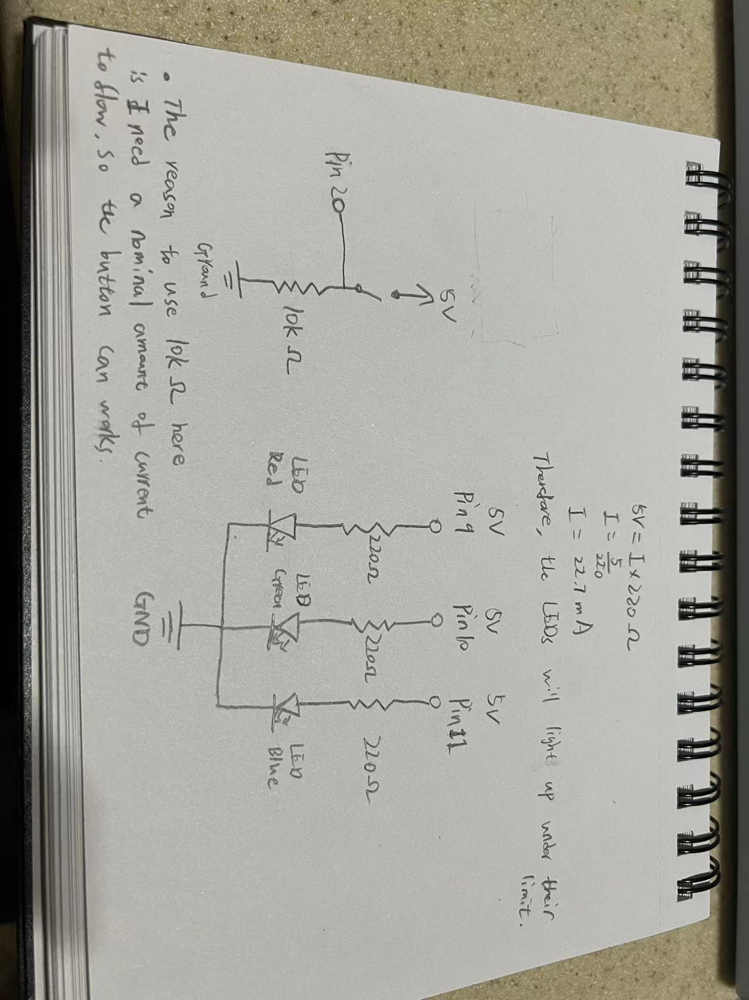

Assignment1: Fade

This is the the gif for the circuit's operation!
Circuit's Schematic

Photo of the Circuit
Firmware:
// constants won't change. They're used here to set pin numbers:
const int R = 9; // the number of the LED Red pin
const int G = 10; // the number of the LED Green pin
const int B = 11; // the number of the LED Blue pin
const int buttonPin = 2; // the number of the pushbutton pin
// variables will change:
int buttonState = 0; // variable for reading the pushbutton status
void setup() {
// initialize the LED pin as an output:
pinMode(R, OUTPUT);
pinMode(G, OUTPUT);
pinMode(B, OUTPUT);
// initialize the pushbutton pin as an input:
pinMode(buttonPin, INPUT);
}
void loop() {
// read the state of the pushbutton value:
buttonState = digitalRead(buttonPin);
// check if the pushbutton is pressed. If it is, the buttonState is HIGH:
if (buttonState == HIGH) {
// turn LED Red on: fade in from min to max in increments of 1 points:
for(int i = 0; i < 256;i++){
// sets the value (range from 0 to 255):
analogWrite(R, i);
// wait for 10 milliseconds to see the dimming effect
delay(10);
}
// turn LED Green on: fade in from min to max in increments of 1 points:
for(int i = 0; i < 256;i++){
// sets the value (range from 0 to 255):
analogWrite(G, i);
// wait for 10 milliseconds to see the dimming effect
delay(10);
}
// turn LED Blue on: fade in from min to max in increments of 1 points:
for(int i = 0; i < 256;i++){
// sets the value (range from 0 to 255):
analogWrite(B, i);
// wait for 10 milliseconds to see the dimming effect
delay(10);
}
} else {
// turn LED Red off:
digitalWrite(R, LOW);
// turn LED Green off:
digitalWrite(G, LOW);
// turn LED Blue off:
digitalWrite(B, LOW);
}
}